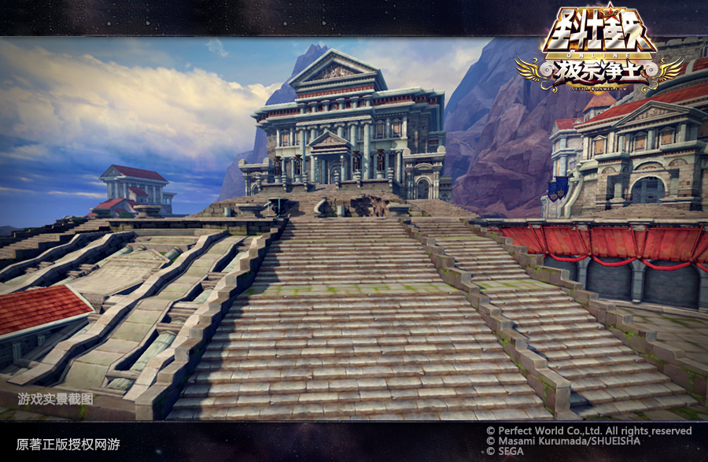
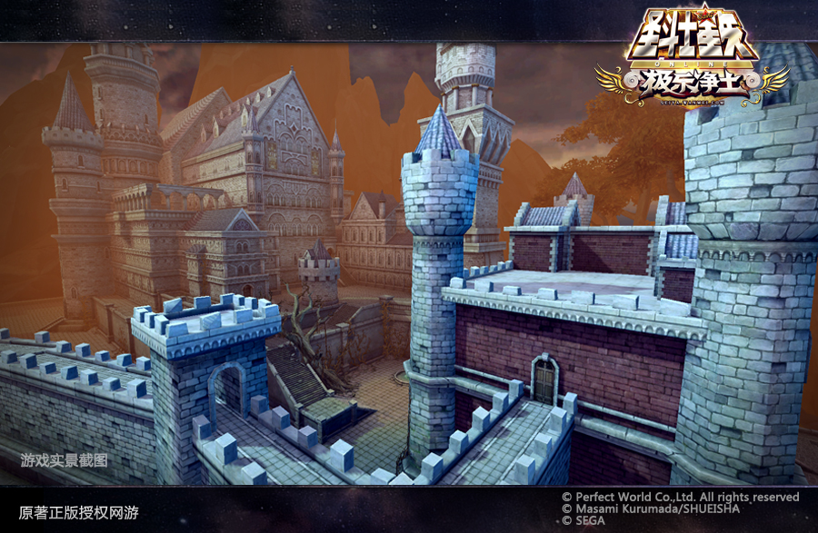
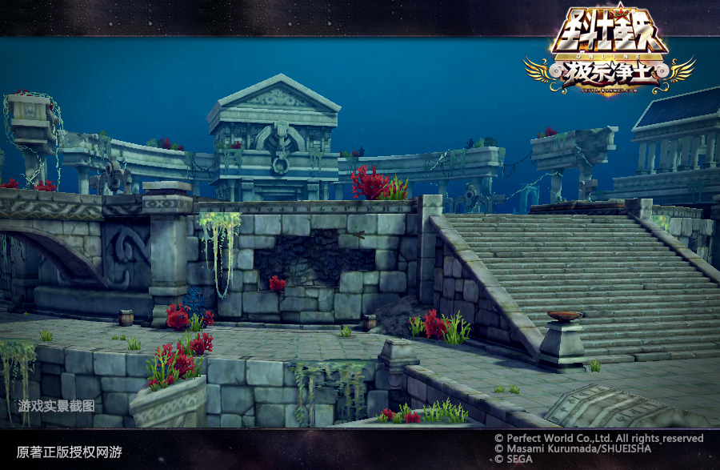
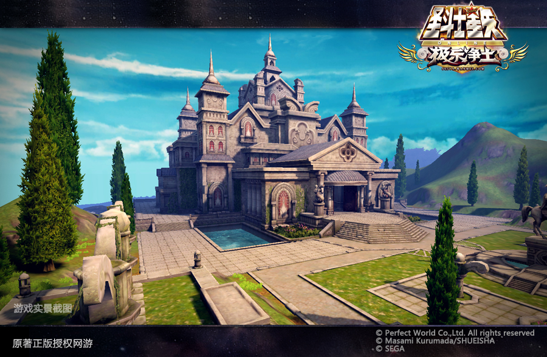
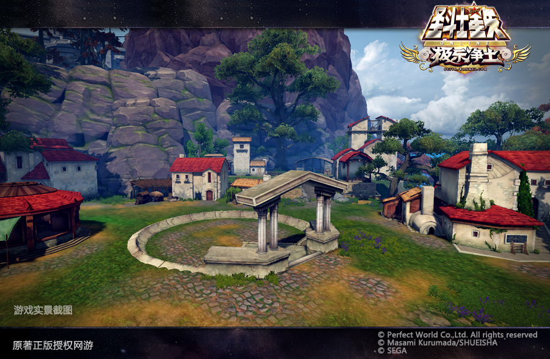

绝密信息先爆料：宿命的征途！银河争霸赛

宏图霸业，决战苍穹！是每个胸怀天下的军团所向往的征程。一直以来，银河争霸赛的战场上，各个星域间的争夺，给所有参战军团及其联盟提供了一个运筹帷幄，剑指沙场的舞台。其间，战术的配合，出兵的线路，以及各领地间的互相支援，都是各个势力团体所必须深思熟虑的。而身为军团长的你，以及你军团内的斗士们，是否也曾热血沸腾，心中燃起过战斗的欲望？你们是否也想在这片银河里拥有属于自己的一席之地，而不愿屈居于人下？如果你曾经韬光养晦，现在羽翼渐丰，那么，你的军团等的就是那一刻！
如果你的宿命中终究要有一战，那么，就现在！全新的银河争霸战，你将获得更大的发展空间。在这片浩瀚无垠的银河里，全新的银河争霸赛，已经将战场扩展到宇宙更深处。在全新的篇章中，雅典娜、波塞冬、甚至连冥王也都将与英勇的圣斗士们并将作战。如果你想获得他们的城池作为自己的军团基地，那么，请证明给他们看！
全新36块星域无主之地，等你来战！
前面说到的，新的星域系统，你将获得更大的扩展空间，海皇星域增加16个等同于白银级海届星座、冥王星域增加20个等同于白银级冥界星座。更多的星域将让你获得更多的选择余地，做到剑有所指。同时，新增的混沌星域将原有战神和太阳神星域合二为一,去除这两大星域主城，保留其原有的中小星域。
为了让你更加从容的进入战斗，在进攻路线图上的也有全新的改进。新的星域设定将关闭小强星座的连接，并取消了关联的规则。每个星域所拥有的5个小强星域让你可以直接竞拍攻打。也就是说，你可以选择直接竞拍攻打任何一块白银星域或者小强星域。只要你占领了小强星域或者白银星域，你就可以继续竞拍攻打任意黄金星域，最后直指主城！所以，在新的星域设定下，您的进攻步奏将更加主动，自由。
然而，改变并非仅此而已。还记得星域重置后，比手快的日子吗？全新的星域将彻底改变这一切，不再有星域重置后拍空地比手快，然后打打小怪兽的 无聊场面。空白星域将随机分配给拥有基地的军团。更多的星域，将会让所有军团都将拥有获得星域的机会，享受一周的星域福利。
同荣辱共进退，奖励全都有
本着共同进退，荣辱与共的军团合作精神，全新的星域奖励下，将让所有军团成员都能获得一定奖励。同时，输方成员也有哟，不会让战士们的汗水白流。
军团获胜后，给军团返还60%的军团资金，同时给军团长发邮件提示他资金已经回到军团内。
做星域霸主，军团基地形象独一无二
随着圣域军团的不断强大，雅典娜、波塞冬、以及刚刚在极乐净土篇中被女神收服的哈迪斯，都将把自己的主城给各个星空的主城占领者作为基地使用。让各个星空的主城拥有者获得无上荣誉。
占领“圣域星空”主城获得独一无二的军团基地——圣域主城：

【圣域主城军团基地】
占领“冥王星空”主城获得独一无二的军团基地——冥王主城：

【冥王主城军团基地】
占领“海皇星空”主城获得独一无二的军团基地——海皇主城：

【海皇主城军团基地】
当然，对于有能力获得星域的军团，也就是占领了黄金、白银、青铜星域的军团，也将获得较好的军团基地——星域城池：虽然不比主城极致奢华，但也算是高端大气上档次。

而对于新创建的军团来说，基地也将一改以往的风格，初级基地显得那么温馨，更有家的感觉。给军团成员一个修生养息，整装待发的绝好场所。

各种全新的规则，请尽快熟悉
全新教皇规则：
教皇系统也有所改变。将直接由各星空主城的军团长直接担任，如果更换军团长时教皇也将同时变更。而教皇的权力也发生变化，三位隶属于各星空阵营的教皇，将各自管理自己的领地，具体变更如下：
A.每个阵营的教皇只能对本阵营的人进行操作，不能干涉其他阵营的玩家，无阵营的散人玩家不受到任何一个教皇的管制。
B.去掉教皇可以开启全服活动的权限。
C.三位教皇均享有之前教皇其他的所有权利。
星域维护规则：
军团占领星域后，每周需缴纳一定的军团资金作为星域维护费用，等级越高的星域维护费用越高，同时维护费用也会根据占领星域的多少来增加，每个不同等级的星域都有自己固定的维护费用，每周奖励发放后收取军团资金，直接从该军团资金中扣除。
竞拍返还规则：
竞拍成功后，如果没有防守方，成功占领星域则返还60%军团资金给竞拍方；如果成功占领星域则返还60%军团资金给竞拍方，同时补偿10%军团资金给防守方；如果占领失败则返还30%给竞拍方，同时给予成功防守方30%军团资金。
星域占领规则：
A.混沌星域只可以被三大阵营外的军团占领，但每个军团只能占领2个。军团占领混沌星域时加入三大阵营后，本周内不做调整，下周检查星域时再将混沌星域放弃。
B.占领限额：每个军团最高只能占领15个星域。
C.占领限制：当军团无阵营时，可占领：混沌星域；当军团在三大阵营时，可占领：所属阵营星域；当军团占领主城时，可占领：所属阵营星域；
军团联盟规则：
A.解除了对主城军团的限制：主城军团可以和同阵营其他军团组成联盟、主城军团可以创建联盟
B.战力限制去除：服务器战力前两名的军团可以和其他军团联盟。
C.阵营限制：只能同阵营的军团结盟。